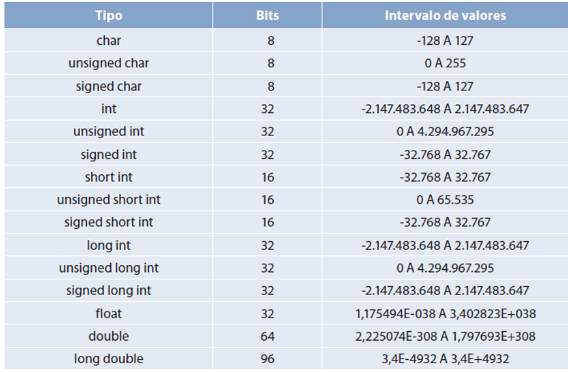
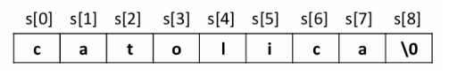

O QUE SÃO VARIÁVEIS NA PROGRAMAÇÃO?
Variável é o nome dado a um espaço na memória do computador o qual é reservado, nomeado e utilizado nos programas para escrever e ler dados. O nome “variável” é utilizado por ser um conteúdo que pode ter informações modificadas enquanto o sistema está sendo executado.
QUAIS SÃO OS TIPOS DE VARIÁVEIS MAIS USADOS?
Int: É utilizado para definir números inteiros, podendo ser negativos ou positivos. Porém, não inclui números com duas casas decimais
float: São utilizadas para fazer o armazenamento de números reais. Podendo ser empregadas em operações simples que contenham números com duas casas decimais.
double: São similares às float, armazenam números reais, mas com precisão dupla. Isso dá a elas o dobro da capacidade das variáveis float.
char: É utilizado para armazenar um único caractere como, por exemplo, uma letra. As variáveis desse tipo podem armazenar números também, porém, não podem ser utilizados em operações de soma, subtração, divisão ou multiplicação, pois será interpretado como se fosse uma letra.
string: São utilizadas para o armazenamento de faixas de texto, palavras ou frase completas;
COMO DECLARAR UMA VARIÁVEL?
Todo valor de entrada que o seu programa possuir pode ser uma variável, e se você quiser utilizar essa variável em algum momento, é necessário reservar um espaço na memória do seu computador para declará-la, espaço esse necessário para armazenar o seu valor. Portanto, antes do programa puder receber uma variável, você precisa informar o computador que isso será feito para ele estar preparado para recebê-la.
Alguns pontos interessantes necessários levarem em consideração na hora de declarar uma variável:
- Escolha um nome descritivo e de fácil entendimento
- Cada identificador da variável deverá ser único
- Evite usar palavras-chave, como: if , var, function, etc..
- As variáveis não aceitam espaço entre nomes.
- Os nomes não podem começar nem terminar com um ponto.
- Pode incluir letras, caracteres exemplos: #, $, y @ e números, mas não deve iniciar com um número.
Exemplo de estrutura básica a seguir:
#include <stdio.h>
int main (void){
int numero1; //Declaração de variavel do tipo int nomeada como “numero1”
float numero2; //Declaração de variavel do tipo float nomeada como “numero2”
return 0;
}
Com as variáveis declaradas, podemos alocar valores a elas. Para isso, precisamos utilizar um comando de entrada que pode variar dependendo do tipo de variável. A seguir há um exemplo simples com valores de saída e entrada que utiliza o comando de entrada scanf para alocar o valor a uma variável:
#include <stdio.h>
int main (void){
int numero1;
float numero2;
printf(“Digite um numero inteiro: ”);
scanf(“%i”, &numero1);
printf(“Digite um numero com decimais: ”);
scanf(“%f”, &numero2);
fflush(stdin);
printf(“\nVoce digitou o numero inteiro %i e o numero quebrado %f!”,numero1,numero2);
getchar();
return 0;
}
O valor de entrada alocado em uma variável possuíra todas as casas decimais que caber no tipo da variável utilizado. Ao exibir essa variável ao usuário, por meio de um comando de saída, podemos limitar a quantidade de casa decimais que queremos mostrar ao utilizar um ponto e o número da quantidade de casas decimais dentro do comando. Exemplo:
printf(“\nVoce digitou o numero inteiro %.i e o numero quebrado %.2f!”,numero1,numero2);
No exemplo, a variável int exibirá nenhuma casa decimal, já que é um número inteiro mesmo, e a variável float exibirá duas casas decimais do valor. O valor que aparecerá será sempre arredondado se necessário para caber no limite imposto.
Variáveis do tipo string possuem um funcionamento um pouco diferente das outras citadas
São cadeias/arrays de caracteres terminados por um caracter binário zerado, também representado por \0. A imagem a seguir representa uma string de 9 caracteres (8 letras e o binário zerado):
Para declarar strings é necessário utilizar char e citar o tamanho entre colchetes: char ies[9];
Apesar de declarar como char, a string fica alocada como variável do tipo %s.
Caso queira dar uma olhada, a seguir compartilhamos um vídeo no YouTube sobre variáveis
Exercícios
Faça um programa que peça um valor em metros e exiba o valor transformado em centímetros.
#include <stdio.h>
int main(void){
float metro; //Declaração apenas da variavel metro
printf("Digite o valor em metros: ");
scanf("%f", &metro);
fflush(stdin);
printf("O valor %f em metros e igual a %f em centimetros",metro,metro*100); //centimetros nao foi declarado como variavel diferente pois esta realizando o calculo dentro do printf
getchar();
return 0;
}
Crie um programa que leia três números inteiros e calcule a média entre eles e exiba-a.
#include <stdio.h>
int main (void){
float numero1,numero2,numero3,media;
printf("Digite o primeiro numero: ");
scanf("%f",&numero1);
printf("Digite o segundo numero: ");
scanf("%f",&numero2);
printf("Digite o terceiro numero: ");
scanf("%f",&numero3);
fflush(stdin);
media= (numero1+numero2+numero3)/3;
printf("\nA media dos numeros %.2f, %.2f e %.2f e igual a: %.2f",numero1,numero2,numero3,media); //exibicao dos valores limitados a duas casas decimais
getchar();
return 0;
}
Faça um programa que peça o nome completo e a idade e então exiba-os
#include <stdio.h>
int main (void){
int idade;
char nome[50]; //declaracao da string com tamanho ate 50 caracteres
printf("Informe seu nome: ");
gets(nome);
printf("Informe sua idade: ");
scanf("%i",&idade);
fflush(stdin);
printf("\nSeu nome e %s e tens %i de idade!",nome,idade); //
getchar();
return 0;
}